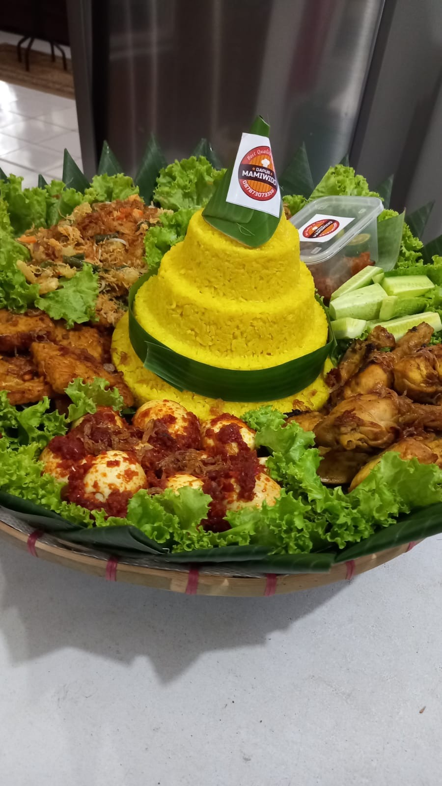

Kembali ke Menu

Nasi Tumpeng
Rp 450.000
Nasi tumpeng tradisional yang disajikan lengkap dengan berbagai lauk pauk khas Indonesia.
Hidangan istimewa yang cocok untuk acara syukuran, ulang tahun, atau perayaan penting lainnya.
Dibuat dengan nasi kuning yang harum dan lauk-pauk yang lezat.
Paket Lengkap Berisi:
• Nasi kuning berbentuk tumpeng
• Ayam bakar / goreng
• Telur balado
• Orek tempe
• Tahu goreng
• Urap sayuran
• Mie goreng
• Sambal dan lalapan segar
Ketentuan Pemesanan:
• Order H-2
• Pengiriman via GoCar atau bisa di pick up